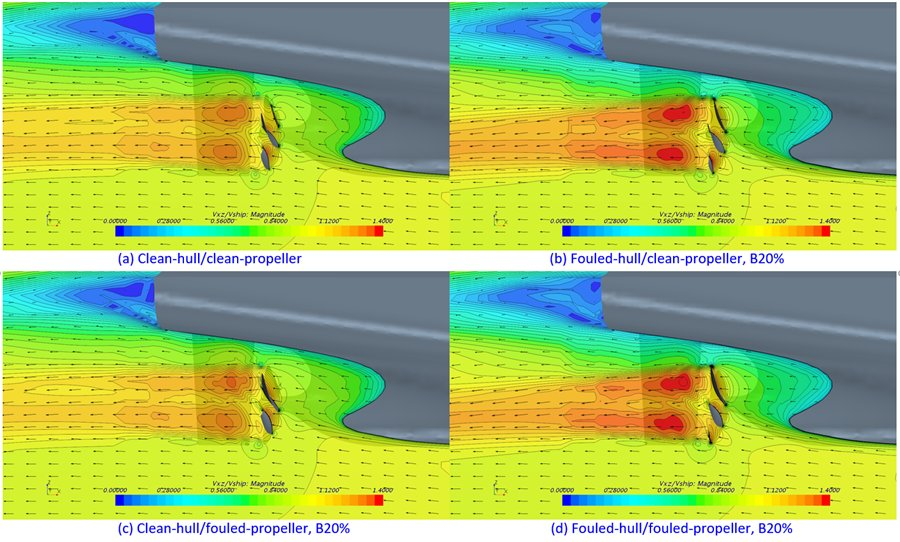
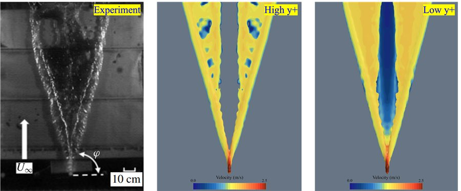
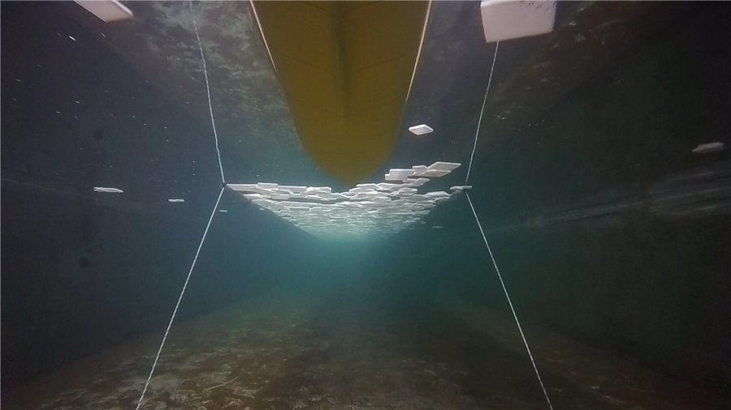
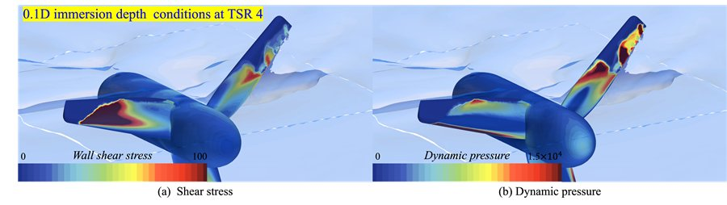
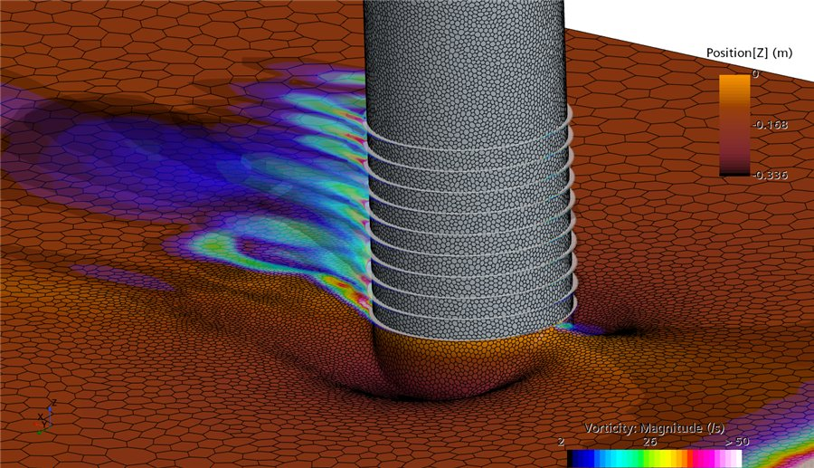

Research
Five areas of work, each supported by both physical experiment and high-fidelity computation.
The problems we work on share a common difficulty: the quantity that matters at full scale cannot be measured directly at full scale, and the quantity we can measure in a laboratory does not scale simply. Surface roughness is the clearest example, but the same tension appears in ice loads, in turbine scale effects, and in the coupled motion of floating structures. Our approach is to measure what we can, compute what we cannot, and validate against full-scale data obtained with industry partners.

Ship Resistance
A ship's hull is never smooth. Paint, welding and — above all — marine biofouling roughen the surface, and that roughness costs fuel. Predicting how much is unexpectedly difficult: unlike a hull form, surface roughness cannot be scaled between a model and a full-scale ship, so a model test alone cannot answer the question.
We attack this on three fronts. Flow-channel and towing-tank experiments determine the roughness function of a given surface. Granville's similarity-law scaling extrapolates that measurement to full scale. And a modified wall-function CFD approach carries the roughness effect into a full three-dimensional flow field, capturing not only skin friction but also the pressure field and propeller performance.
This line of work has produced practical added-resistance diagrams, a prediction method for heterogeneous (patchy) hull roughness, and a re-examination of the Townsin formula that the ITTC has relied on since 1990.
- Hull roughness
- Marine biofouling
- Antifouling coatings
- Roughness function
- Similarity-law scaling
- Modified wall function


Ship Hydrodynamics & Energy Efficiency
A ship in a seaway moves in six degrees of freedom while its rudder and propeller respond continuously. We simulate this directly: free-running CFD in which the vessel is not constrained but steers, accelerates and rolls as it would at sea.
With this approach we have studied course-keeping in adverse weather, manoeuvring after sudden propulsion or steering failure, the influence of GM and trim variation, path-following control for maritime autonomous surface ships (MASS), and the seakeeping of damaged vessels.
The same toolset supports energy-saving technologies now under pressure from IMO carbon regulation. We evaluate air lubrication systems, where air injected beneath the hull reduces frictional resistance, and wind-assisted ship propulsion — wing sails and rotor sails — using a software-in-the-loop method that reproduces aerodynamic forces in the towing tank in real time.
- Free-running CFD
- Manoeuvring
- Seakeeping
- Autonomous ships
- Air lubrication
- Wind-assisted propulsion
- Rotor sails

Polar & Ice-Going Ships
As Arctic routes become navigable, ships must be designed for ice — and ice resistance is a problem that neither conventional CFD nor standard model testing handles well on its own. Ice floes are discrete bodies: they collide with one another and with the hull, break, rotate, and are pushed under.
We combine coupled CFD–DEM simulation, in which the fluid and each individual ice floe are solved together, with model tests in artificial ice. This work supports the development of Polar Class icebreakers and eco-friendly icebreaking container ships for new Arctic shipping routes.
- Ice resistance
- CFD–DEM coupling
- Ice-tank testing
- Polar Class
- Icebreaker design

Marine Renewable Energy
Tidal turbines and floating offshore wind turbines operate in exactly the conditions our ship work addresses: rough surfaces, waves, and strongly coupled motion. This is a major strand of the laboratory, not a side interest.
For tidal current turbines we study how performance and structural loading change with submergence depth and wave conditions, how free-surface exposure alters the flow, the scale effects between laboratory and full-size rotors, and the penalty imposed by biofouling on the blades.
For floating offshore wind we couple CFD with OpenFAST and MoorDyn so that aerodynamic, hydrodynamic and mooring behaviour are captured together — including what happens after a mooring line fails, when the platform drifts and the turbine must survive.
- Tidal current turbines
- Floating offshore wind
- OpenFAST coupling
- MoorDyn
- Mooring line failure
- Scale effects

Applied & Environmental Hydrodynamics
The methods we develop for ships transfer to other flows. Two current examples show how far the same CFD capability reaches.
Dissolved oxygen in aquaculture. Fish in sea cages suffer when oxygen runs low. We model oxygen transport from injected bubbles into seawater using a passive-scalar approach with two-film mass transfer, computing the saturation concentration in real time from temperature and salinity.
Scour around structures. Currents erode the seabed around bridge piers and offshore foundations. We simulate this with an erosion model coupled to mesh morphing, so the seabed shape evolves as the flow carries sediment away.
- Dissolved oxygen transport
- Aquaculture
- Passive scalar
- Scour
- Sediment erosion
- Mesh morphing
Where next?